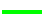

Soubor catalogTrees.xml z adresáře template_1 slouží k rychlému nastavení ikon v Paletě položek pro Control Panel Editor ve stylu JMRI JOP.
Soubor catalogTrees.xml z tohoto adresáře zkopírujte do adresáře Umístění profilu. Předpokladem je, že soubor catalogTrees.xml ještě neexistuje. Pokud ano, budou současná nastavení katalogu ztracena.
Katalog z adresáře template_1 používá následující barevné schema:
| Význam | Příklad | RGB dec | RGB hex |
|---|---|---|---|
| Pozadí | 51, 51, 51 | #333333 | |
| Volno | 128, 128, 128 | #808080 | |
| Obsazeno | 255, 0, 0 | #FF0000 | |
| Přiděleno |  | 0, 255, 0 | #00FF00 |
| Rozkaz | 255, 0, 255 | #FF00FF | |
| Jiný režim | 255, 255, 255 | #FFFFFF | |
| Mimo provoz | 0, 255, 255 | #00FFFF | |
| Bez detekce | 128, 128, 128 | #808080 |
| Význam | Příklad | RGB dec | RGB hex |
|---|---|---|---|
| Tlačítko nestisknuto | průhledné | průhledné | |
| Výhybka stisknuto | 221, 221, 221 | #DDDDDD | |
| Hlavní návěstidlo stisknuto | 0, 192, 0 | #00C000 | |
| Seřaďovací návěstidlo stisknuto | 221, 221, 221 | #DDDDDD | |
| Pomocné stavědlo Neaktivní | 128, 128, 128 | #808080 | |
| Pomocné stavědlo Aktivní | 64, 64, 255 | #4040FF | |
| Pomocné stavědlo Neznámý | 0, 0, 0 | #000000 | |
| Pomocné stavědlo Nekonzistentní | 0, 255, 255 | #00FFFF |
Všechny ikony jsou navržené tak, aby mohly být umisťovány do mřížky s roztečí 10 pixelů. Tato hodnota se dobře pamatuje. Při dodržení mřížky 10 pixelů budou všechny ikony na sebe správně navazovat.
Obsah adresáře JOP.
| bumper | Zarážedlo | |
| button | Tlačítko | |
| curve | Oblouková kolej | |
| derailer | Výkolejka | |
| permission | Řadič | |
| portal | Portál | |
| r-r | Přejezd | |
| signal | Návěstidlo | |
| template_1 | Katalog 1 | |
| template_2 | Katalog 2 | |
| tower | Stavědlo | |
| track | Kolej | |
| turnout | Výhybka |